#30DayChartChallenge 2026
30 charts. 30 days. 5 categories. One April.
Every April, the #30DayChartChallenge brings together practitioners from around the world to explore data through daily visualizations — one chart per day, guided by thematic prompts. This is my 2026 edition: 30 analytical charts, built entirely in R with ggplot2, across five categories. Each entry links to the full post with code, data sources, and methodology notes.
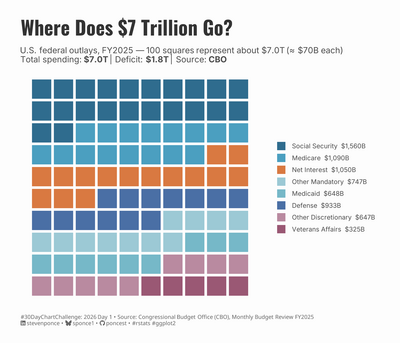
Where Does $7 Trillion Go?
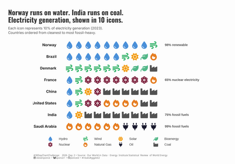
Norway Runs on Water. India Runs on Coal.
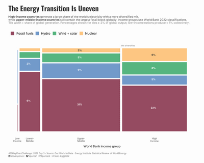
The Energy Transition Is Uneven
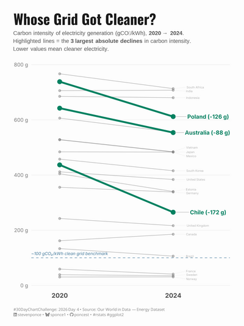
Whose Grid Got Cleaner?
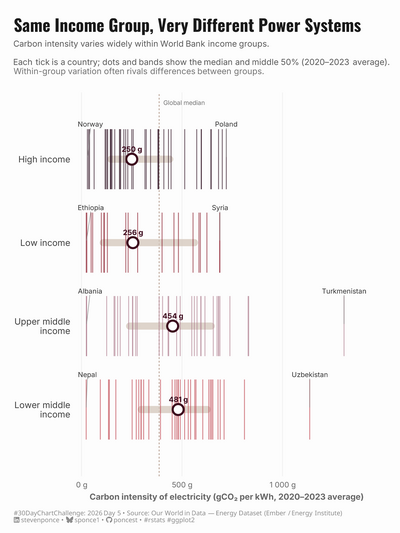
Same Income Group, Very Different Power Systems
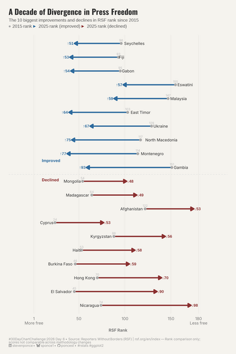
A Decade of Divergence in Press Freedom
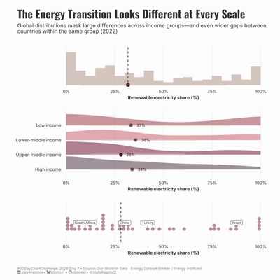
The Energy Transition Looks Different at Every Scale
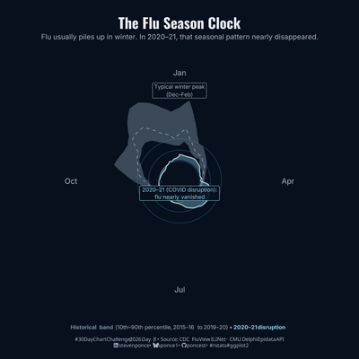
The Flu Season Clock
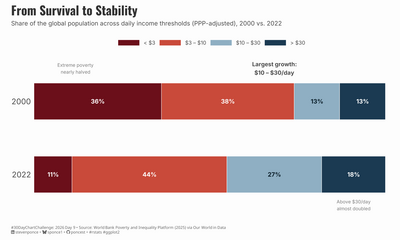
From Survival to Stability
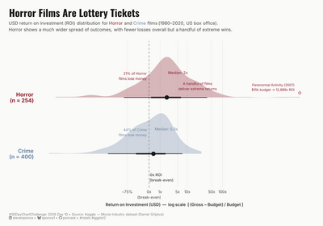
Horror Films Are Lottery Tickets
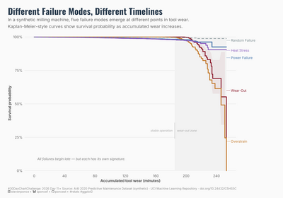
Different Failure Modes, Different Timelines
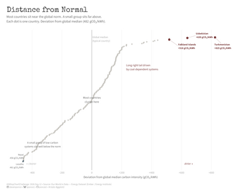
Distance from Normal
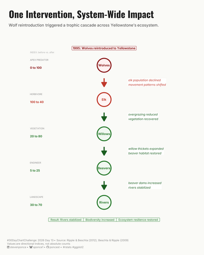
One Intervention, System-Wide Impact
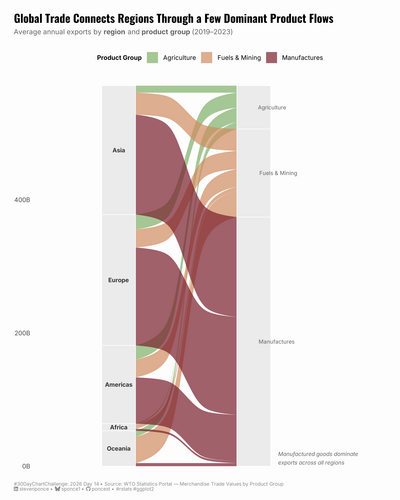
Global Trade Connects Regions Through a Few Dominant Product Flows
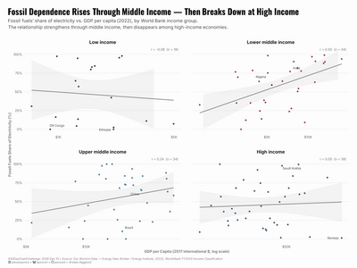
Fossil Dependence Rises Through Middle Income — Then Breaks Down at High Income
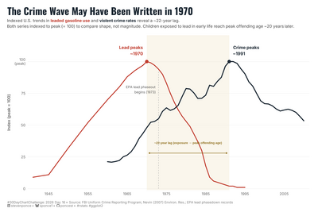
The Crime Wave May Have Been Written in 1970
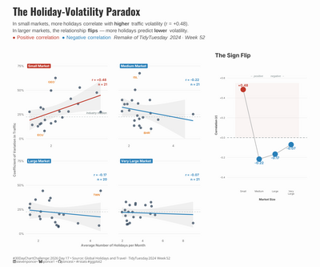
The Holiday-Volatility Paradox
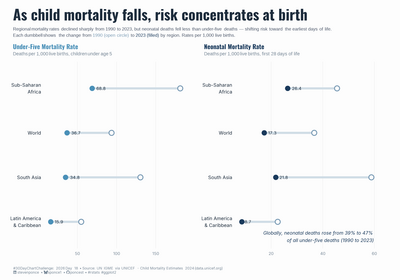
As Child Mortality Falls, Risk Concentrates at Birth
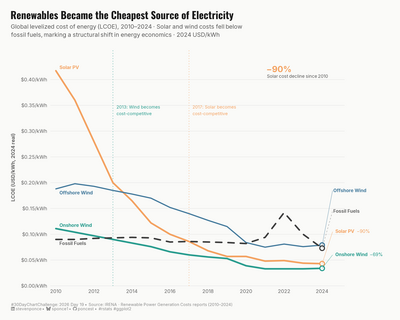
Renewables Became the Cheapest Source of Electricity
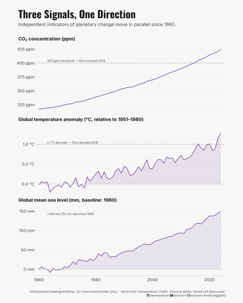
Three Signals, One Direction
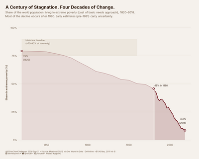
A Century of Stagnation. Four Decades of Change.
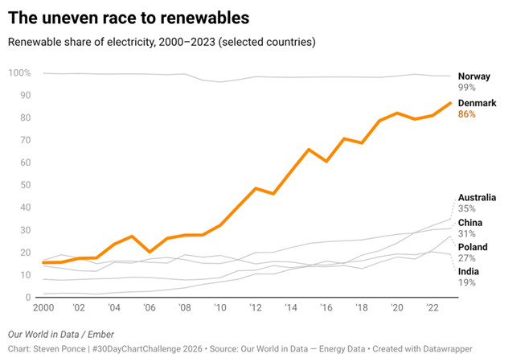
The Uneven Race to Renewables
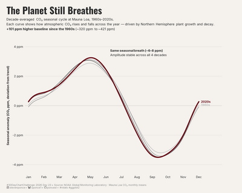
The Planet Still Breathes
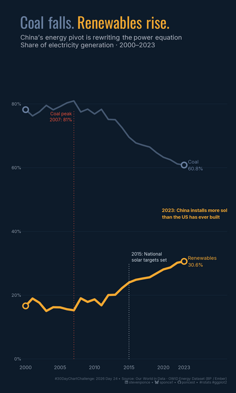
Coal Falls. Renewables Rise.
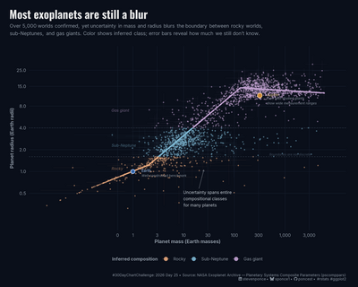
Most Exoplanets Are Still a Blur
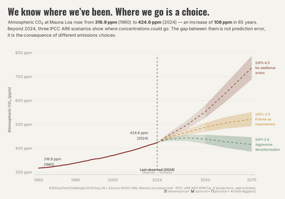
We Know Where We've Been. Where We Go Is a Choice.
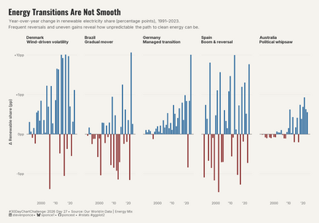
Energy Transitions Are Not Smooth
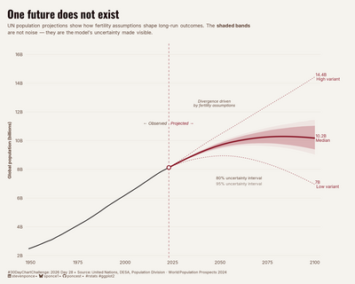
One Future Does Not Exist
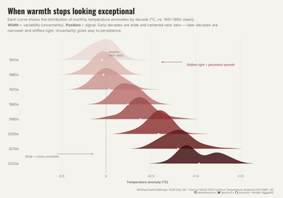
When Warmth Stops Looking Exceptional
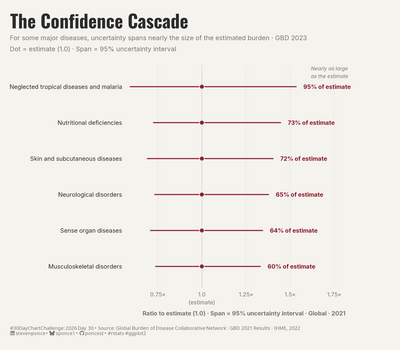
The Confidence Cascade
Built with R & ggplot2 · Visualized by Steven Ponce · GitHub
Back to top